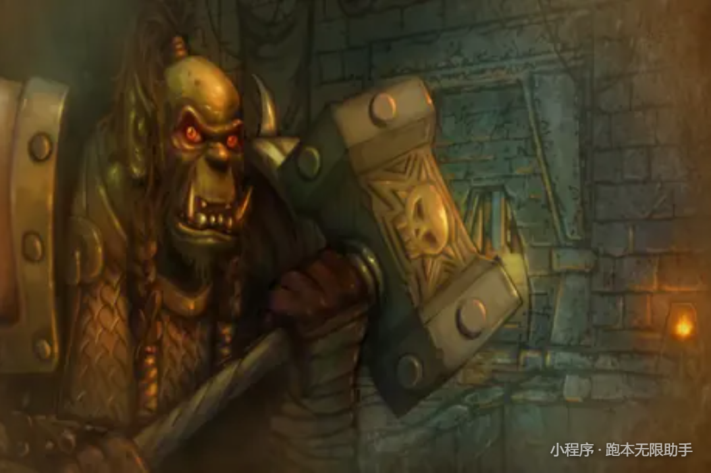
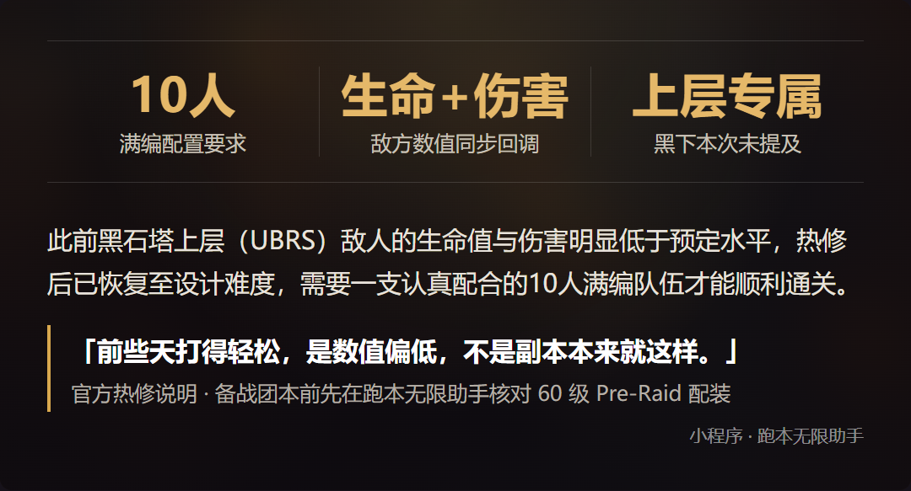
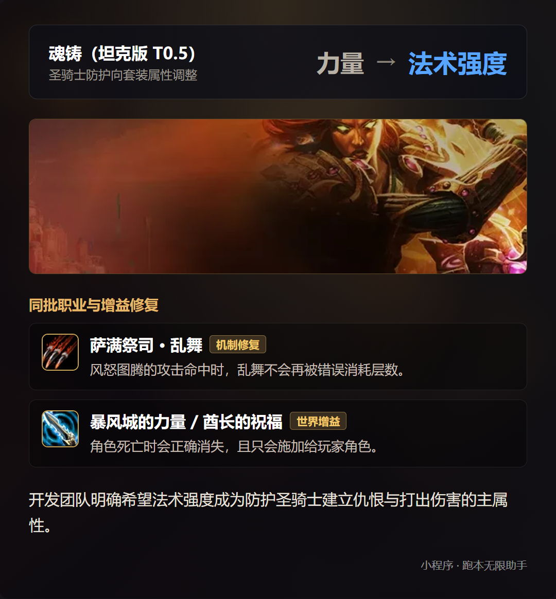
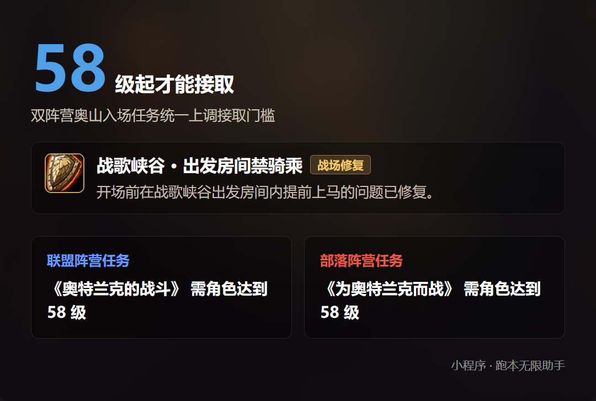
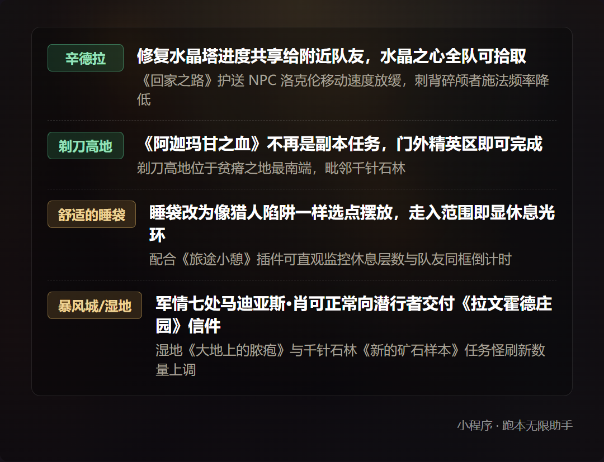
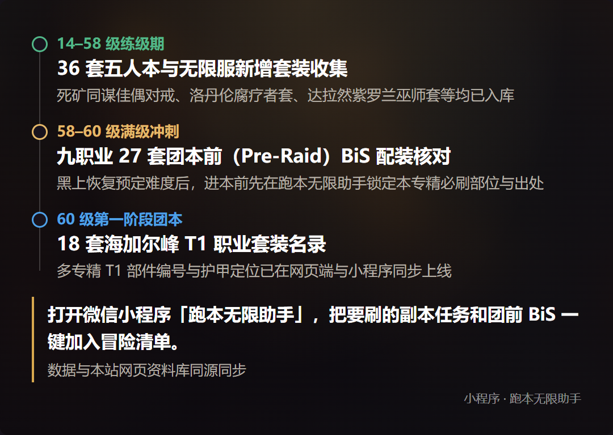
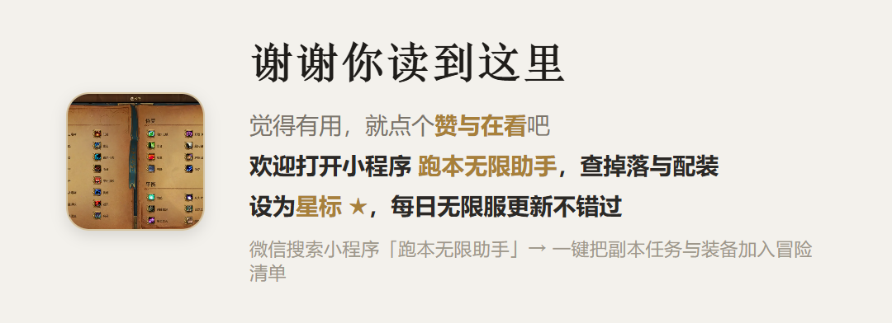

黑石塔上层恢复了原本的 10 人满编难度，防骑 T0.5 魂铸套由力量改为法术强度；辛德拉任务共享进度，睡袋也改成了选点摆放。
黑石塔上层，恢复预定难度
此前黑石塔上层敌人的生命值和伤害都明显低于预定水平，这次热修一并回调。蓝帖明确提到，现在又需要一支认真配合的 10人满编队伍 才能顺利通关，具体上调幅度未公布，黑石塔下层本次没有提及。
对于刚满 60级 准备刷雷德双刀、石楠之环或各职业 团本前（Pre-Raid）BiS 的玩家来说，进本前建议先组齐标准配置。

防骑的魂铸套，力量换成了法术强度
坦克版 T0.5 「魂铸」套装原来提供的力量属性，在本次热修中正式改为了法术强度。开发团队解释，希望让法术强度成为防护圣骑士制造伤害与仇恨的主要属性。
另外还有两条职业与增益修复：风怒图腾命中时，萨满祭司的乱舞不会再误掉层数；暴风城的力量与酋长的祝福在角色死亡时会正确消失，且只会施加给玩家角色。

奥特兰克山谷，阵营任务要 58 级才能接
奥山两边的阵营入场任务——联盟《奥特兰克的战斗》与部落《为奥特兰克而战》，现在统一调整为 58级 才能接取。同时，战歌峡谷开场前在出发房间里提前骑上坐骑的问题也已修复。

辛德拉的水晶塔、睡袋摆放与世界任务优化
辛德拉声望与任务体验轻松了不少：修复水晶塔的进度现在会共享给附近队友，水晶之心任务掉落全队每个人都能拾取；剃刀高地的《阿迦玛甘之血》也不再要求进副本，门外精英区就能做完。
备受练级玩家好评的舒适的睡袋，现在改成了像猎人陷阱一样选点摆放，走进范围就会出现休息光环。

备战满级与团本：跑本无限助手已同步 27 套团前 BiS
随着黑上难度回归与满级玩家增多，本站与「跑本无限助手」小程序已同步更新 36套 14–58 级练级套装、九职业 27套 60 级团前 Pre-Raid BiS（共 422件 装备中文出处）以及 18套 海加尔峰 T1 名录，方便进本前随手核对。

黑上恢复满编难度，
防骑魂铸改走法强，
野外任务减负提速，
进本前先核好你的配装。
注：热修条目按美服蓝帖发布时间整理，国服具体生效时间以官方公告与游戏内实装为准。
资料与数据核对来源
暴雪官方论坛蓝帖（11月17日在线修正说明）
本站无限服真源数据库（changes.json / bis.json / dungeons.json）
微信小程序：跑本无限助手（60级团前BiS与副本手册）
跑本无限助手 ｜ 无限服日报
